AIGA Design Census
Data Visualization
March 2017
Contributions
Visual Design
Layout
Surveying
Overview
Our group was tasked with visually representing data from the 2016 AIGA Design Census, and finding out how to present meaningful information that can be extracted from the results. We went down a more abstract path for the data visualization, creating cards that represented how different industries approached design as a concept.
This project was selected as a Regional Winner in the 2017 Print Regional Design Annual.

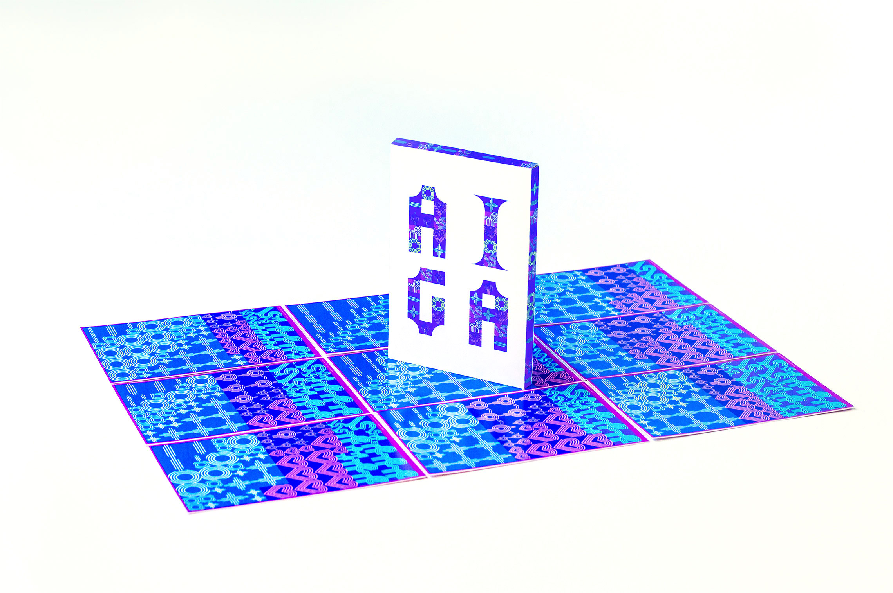
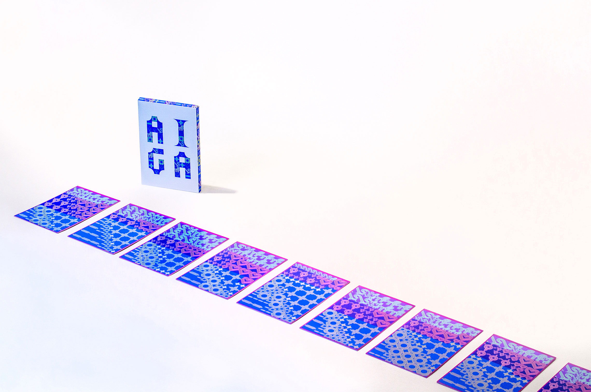
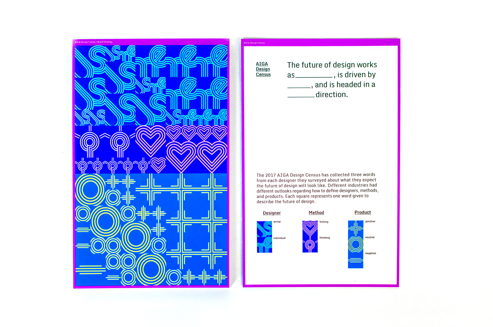
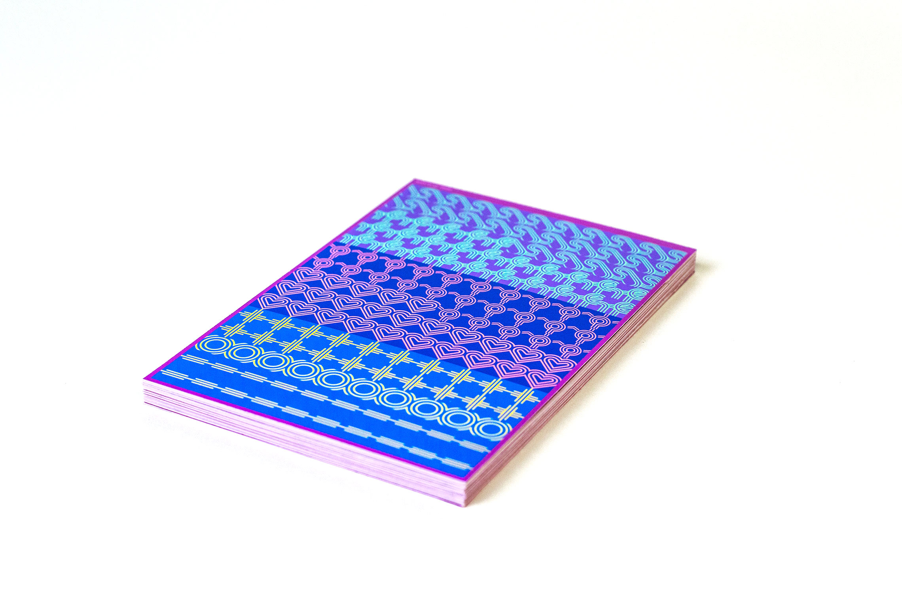
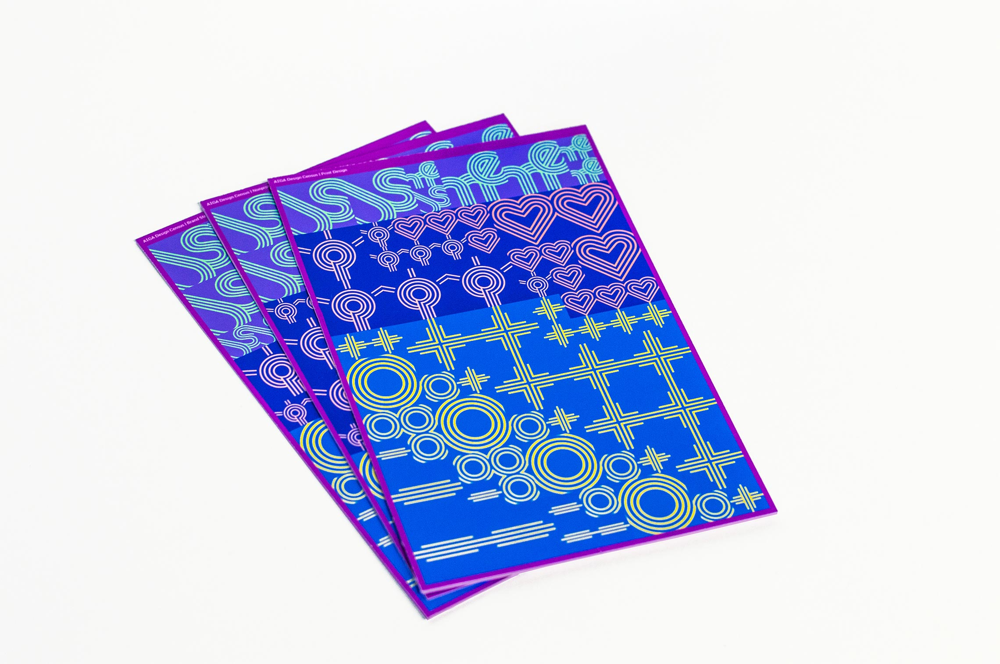
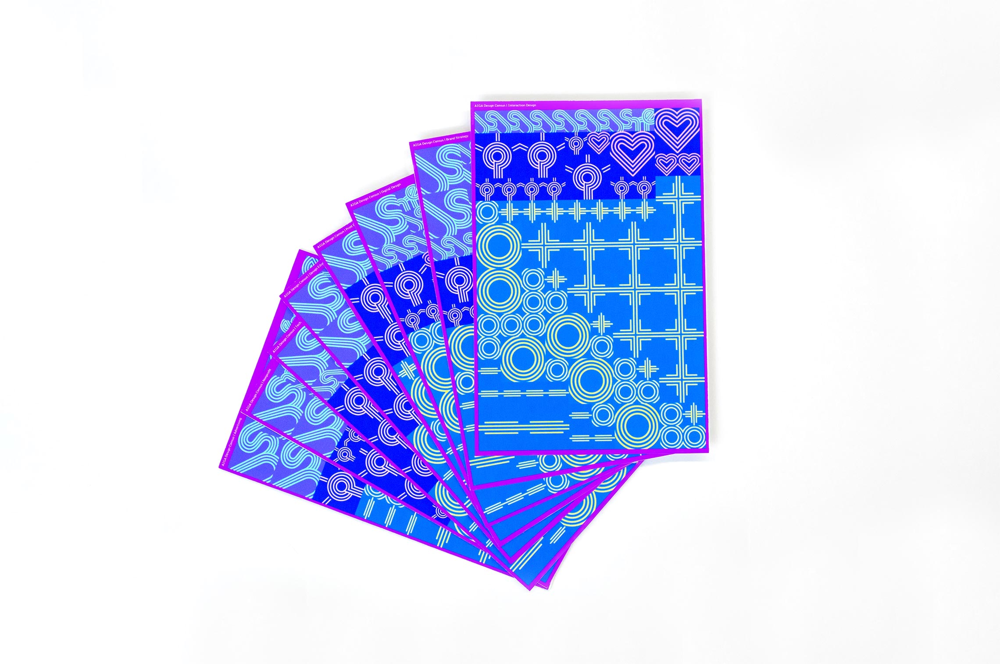
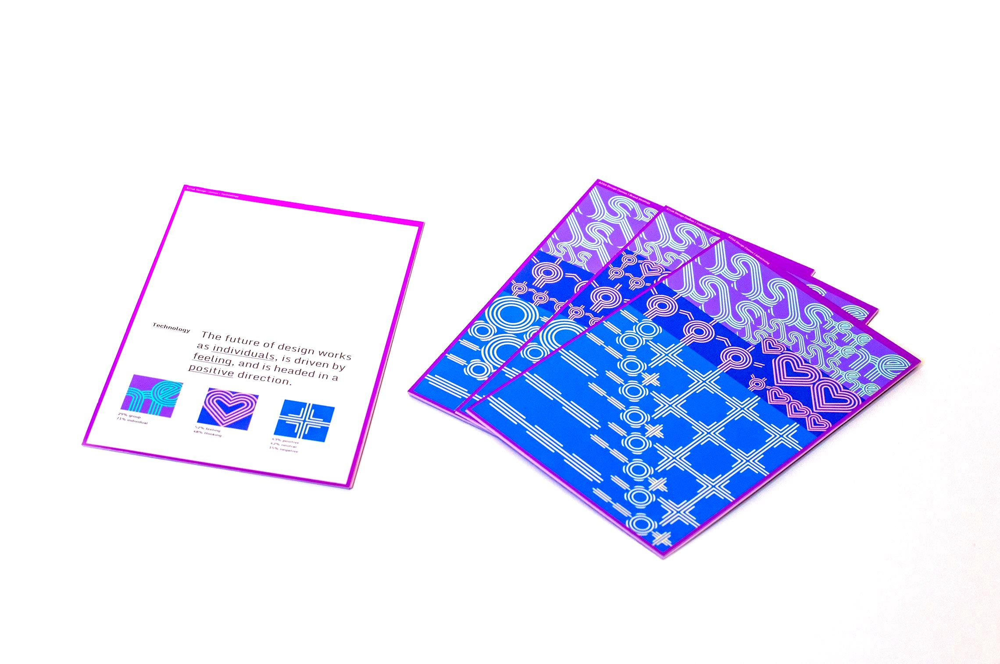
Developing a System
The main piece of data we used from the Design Census was a question that asked surveyors to give three words that they believed represented the future of design. From there, we organized the words into three categories: designer, method, and product.
"Designer" represented how much should designers work with one another, "Method" represented the process in which they should work, and "Product" represented the ultimate outcome of the design process. Within each category, we filtered the results into smaller branches: words about the "designer" were interpreted as collaborative or individual, "method" was divided into thinking or emotive process, and "product" was divided into positive, negative, or neutral connotations about the future.
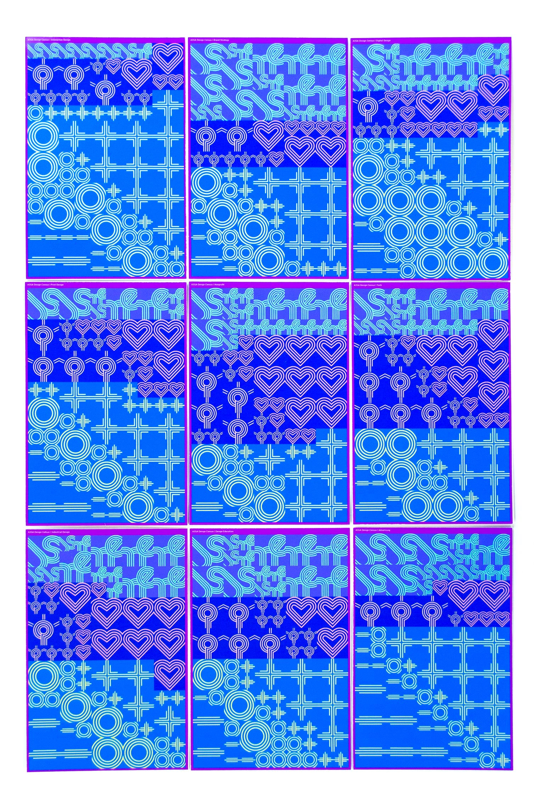
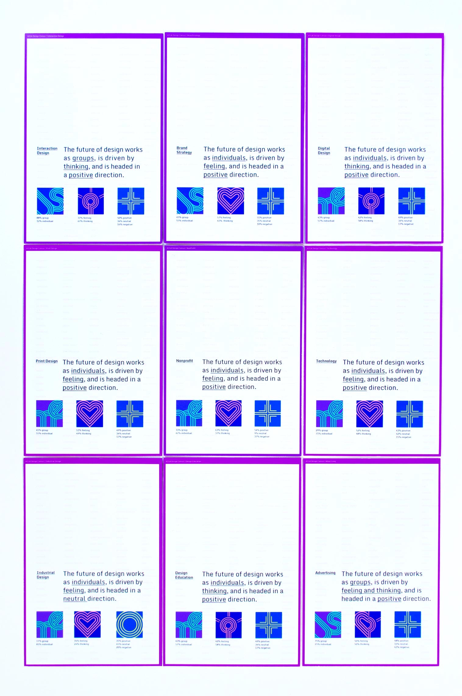
Visual Language
After developing our system for representing the data, our group worked towards creating a visual language that could communicate what we had found within the survey results. We worked separately on type, color, and layout iterations, and met up frequently to discuss potential ideas that could potentially work well together.
Our original iterations involved a more disparate color palate, but problems such as visual balance between the three categories led us to work with more harmonious colors. We also received feedback that the patterns within each grid unit were too busy, so we moved towards a more minimal approach with the symbols.
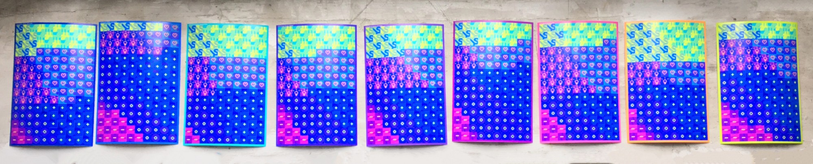
Finalizing the Visuals
We worked with each other for several weeks, developing different layouts and color schemes to create a more unified set of symbols within each card, and cards within the deck as a whole. Other iterations involved same-sized symbols on the fronts, breaking the grid within each section, vibrant symbols against duller backgrounds, among other variations of visual hierarchy.
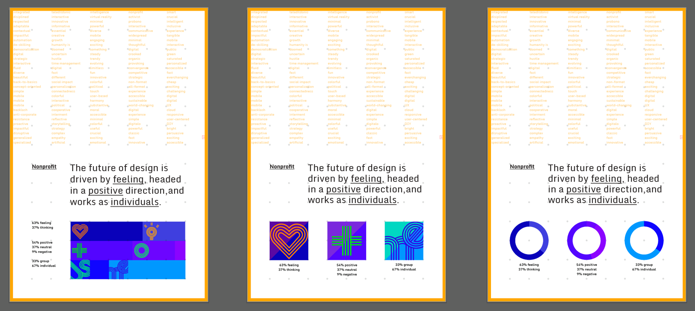
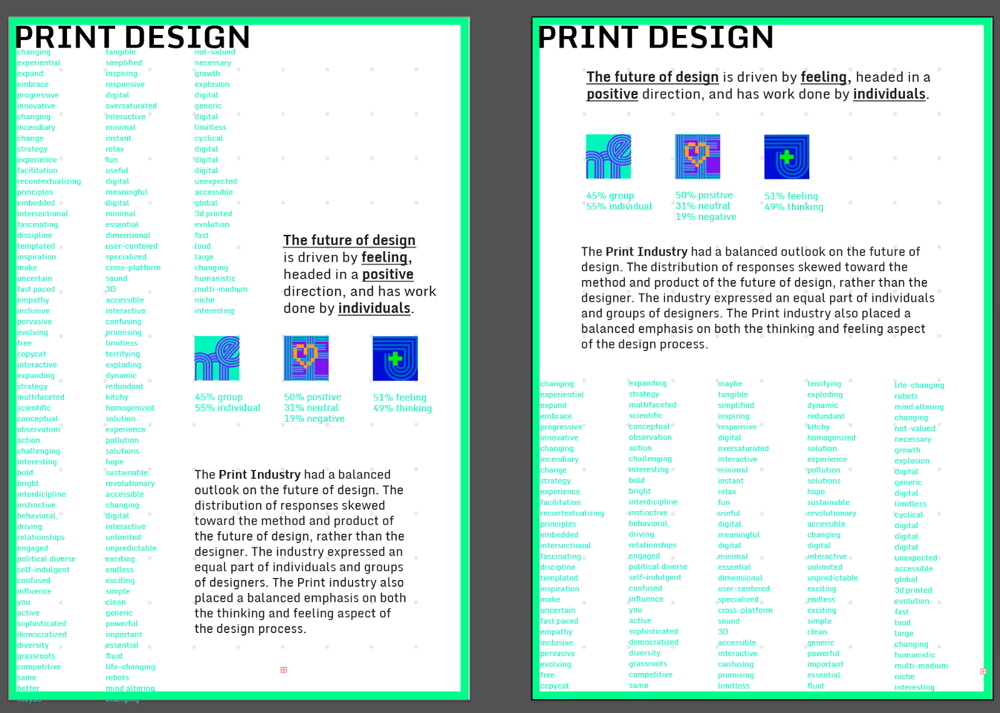
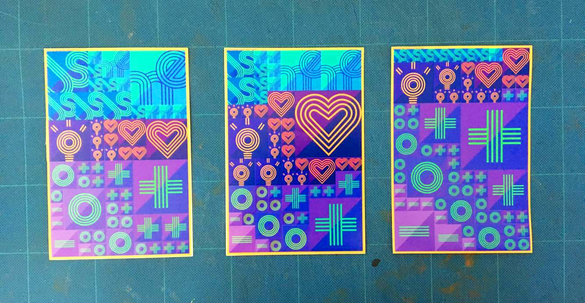
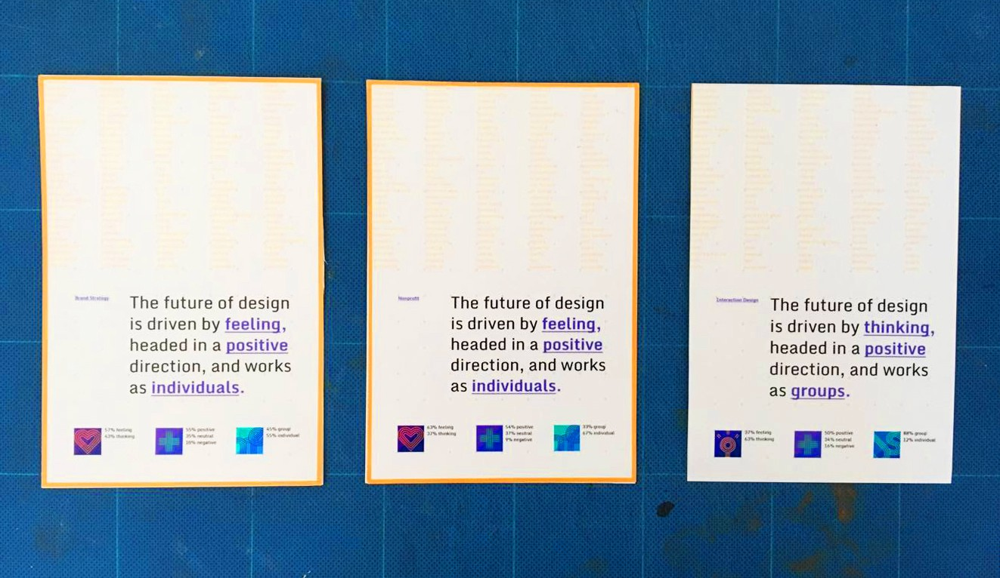
Post-Project Thoughts
As one of my first projects on visualizing large sets of data, I learned a lot about topics such as surveymaking and the development of visual systems. Among our group's largest concerns was the challenge of balancing an aesthetically-pleasing system with the clarity of communicating our findings in a visual format. In the end, I think that more focus could have been put on the communication aspect from multiple distances to improve the ease of use. Soon after this project, my team and I finished another data visualization piece: the CMU Design Census.